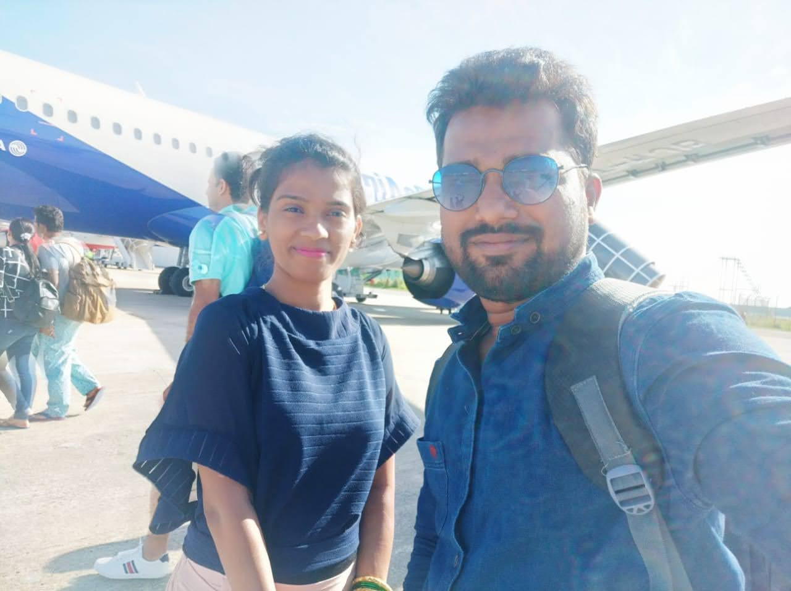
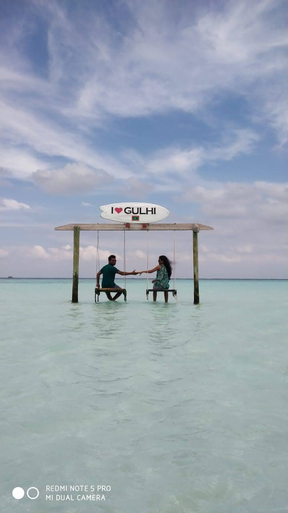
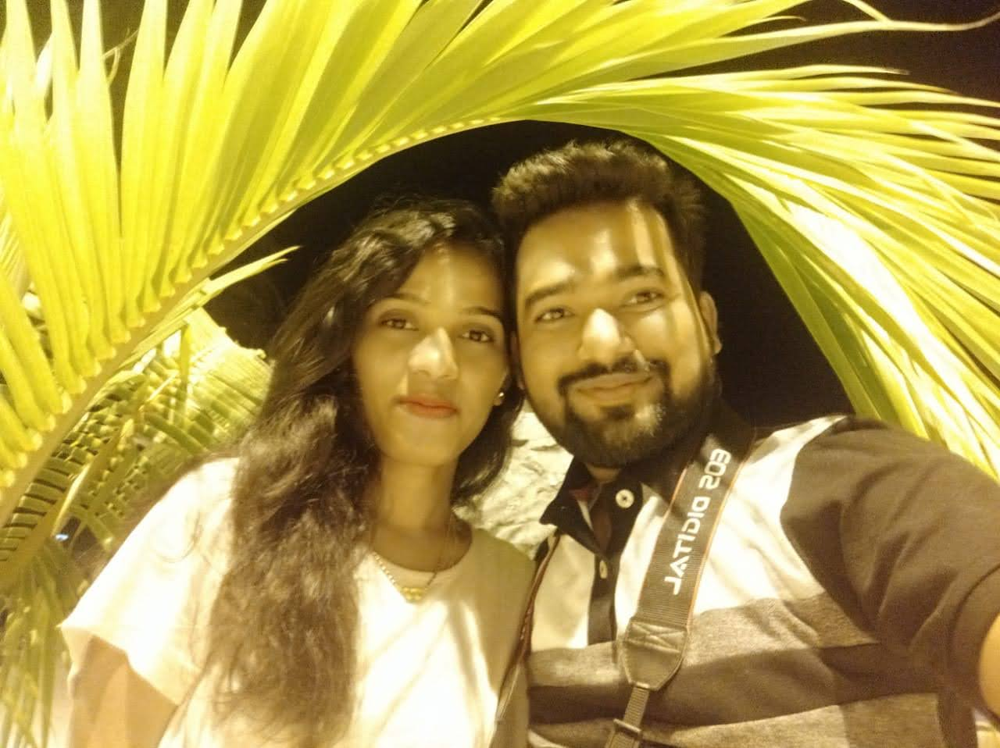

We arrived at Male International Airport and were whisked away to our luxurious overwater bungalow at a private resort. The personalized service, coupled with breathtaking views of the Indian Ocean, made our arrival unforgettable. Our stay was a seamless blend of comfort and nature, with every detail meticulously taken care of by the attentive staff. Waking up to the sound of gentle waves and witnessing mesmerizing sunsets from our deck were some of the highlights.We arrived in the Maldives and were greeted by crystal-clear turquoise waters and white sandy beaches. Our overwater bungalow provided breathtaking views and a truly immersive experience.

Exploring the Islands
During our stay, we explored different islands, each with its unique charm. From vibrant coral reefs to lush greenery, the Maldives offered a diverse range of natural beauty.
We embarked on a journey to discover the unique charm of each Maldivian island. Snorkeling in the coral gardens of Vaavu Atoll, walking along the pristine beaches of Maafushi, and experiencing the vibrant culture of Malé were among the diverse activities. The natural beauty, from the turquoise lagoons to the lush greenery, left us in awe. Our exploration was guided by knowledgeable locals who shared stories about the islands' rich history and traditions.


Adventures in the Ocean
The Maldives offered an underwater paradise for adventure seekers. Our scuba diving excursions took us to thriving coral reefs teeming with colorful marine life. Snorkeling with gentle sea turtles and encountering playful dolphins during a sunset cruise were magical moments. The adrenaline of water sports, including jet-skiing and parasailing, added excitement to our ocean adventures. Each day brought new discoveries and unforgettable encounters beneath the surface.
We enjoyed various water activities such as snorkeling, scuba diving, and boat trips. The marine life was incredible, and we had the chance to witness colorful coral formations and swim with exotic fish.